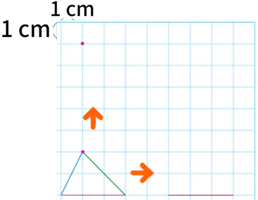

- 물음 1
- 물음 2
- 물음 3
- 물음 4
-
삼각형 ㄱㄴㄷ을 위쪽과 오른쪽으로 5 cm 밀면 어떻게 될지 예상해 보세요.
삼각형 ㄱㄴㄷ의 모양은 그대로이고, 도형의 위치만 위쪽으로 5 cm 이동할 것 같습니다. -
삼각형 ㄱㄴㄷ을 위쪽과 오른쪽으로 5 cm 밀었을 때의 도형을 그려 보세요.
1 cm1 cm -
바르게 그렸는지 확인해 보세요.
삼각형 ㄱㄴㄷ을 위쪽으로 5 cm 밀면 제시된 꼭짓점이 점 ㄱ에 해당하는 것을 알 수 있습니다.삼각형 ㄱㄴㄷ을 오른쪽으로 5 cm 밀면 제시된 선분이 변 ㄴㄷ에 해당하는 것을 알 수 있습니다. -
모양과 위치는 어떻게 변하는지 이야기해 보세요.
도형을 밀면 민 방향과 길이만큼 도형의 위치가 바뀝니다.도형을 밀면 모양은 변하지 않지만 위치는 변합니다.